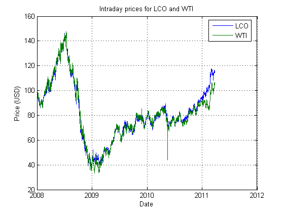
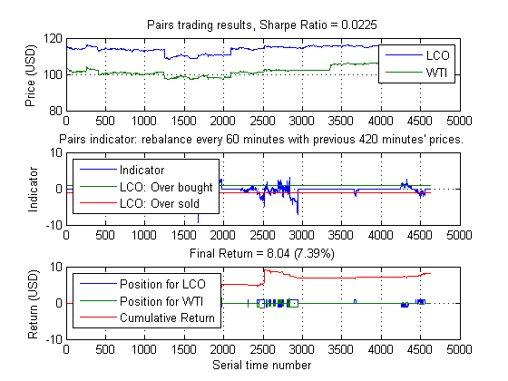
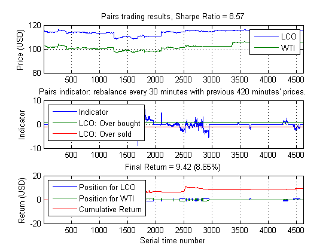

Algorithmic Trading with MATLAB: Pairs trading
This demo shows how functionality within Econometric Toolbox can be used to identify and calibrate a simple, intraday pairs trading strategy.
Copyright 2010-2012, The MathWorks, Inc. All rights reserved.
Contents
Load intraday data from a database
As before, we will download intraday data for Brent Crude (LCO) from our database. We will also download data corresponding to West Texas Intermediate (WTI).
% Rather than forcing the customer to define and populate a database, we % will instead read from a prepared data file. If you wish, you may write % the data from this file to a database of your choosing and adapt the % GETMINUTEDATAFROMDB command to connect to and read from it. % LCO = getMinuteDataFromDB('LCO'); % WTI = getMinuteDataFromDB('WTI'); load oilData LCO = double(brent); WTI = double(light); clearvars -except LCO WTI pairsChart(LCO, WTI) % These two time series have historically tracked each other, but since % December 2010, LCO has consistently traded higher than WTI. It would % seem that a pairs trading strategy would not work in 2011, but if we are % willing to actively recalibrate our model on an intraday basis, we may % find profitable opportunities. % Let's focus on the last 11 days' of data: series = [LCO(end-4619 : end, 4) WTI(end-4619 : end, 4)];
The cointegration test framework
Econometrics Toolbox supports both the Engle-Granger and the Johansen cointegration frameworks. Engle-Granger is the older model, and Johansen is particularly useful for analyzing more than two time series at a time. We will use Engle-Granger for our trading model.
% First, we note that the last 11 days are not cointegrated as a whole egcitest(series) % (A zero indicates failure to reject the null hypothesis that no % cointegrating relationship exists.)
ans =
0
Even so, there are smaller windows of time where a cointegrating relationship does exist.
[h, ~, ~, ~, reg1] = egcitest(series(1700:2000, :)); display(h)
h =
1
The test estimates the coefficients of the cointegrating regression as well as the residuals and the standard errors of the residuals: all useful information for any pairs trading strategy.
display(reg1)
reg1 =
num: 301
size: 301
names: {2x1 cell}
coeff: [2x1 double]
se: [2x1 double]
Cov: [2x2 double]
tStats: [1x1 struct]
FStat: [1x1 struct]
yMu: 110.7448
ySigma: 0.3043
yHat: [301x1 double]
res: [301x1 double]
DWStat: 0.1891
SSR: 13.0123
SSE: 14.7666
SST: 27.7789
MSE: 0.0494
RMSE: 0.2222
RSq: 0.4684
aRSq: 0.4666
LL: 26.6152
AIC: -49.2304
BIC: -41.8162
HQC: -46.2636
The pairs trading strategy
The following function describes our pairs strategy. It is basically a copy of our other existing strategy files, with significant changes to only about 7 lines of code.
edit pairs
We may test this strategy as we do our other rules:
pairs(series, 420, 60) % Note that this strategy will not trade if the most recent minutes do not % show signs of cointegration and that the size of the long/short positions % are dynamically scaled with the volatility of the cointegrating % relationship. Many other customizations can be made.
We can use our existing parameter sweep framework to identify the best combination of calibration window and rebalancing frequency. This builds off of existing code and takes advantage of parallel computing:
if matlabpool('size') == 0 matlabpool local end window = 120:60:420; freq = 10:10:60; range = {window, freq}; annualScaling = sqrt(250*7*60); cost = 0.01; pfun = @(x) pairsFun(x, series, annualScaling, cost); tic [~,param] = parameterSweep(pfun,range); toc pairs(series, param(1), param(2), 1, annualScaling, cost)
Elapsed time is 37.228054 seconds.
Despite the fact that these historically-tracking time series have diverged, we can still create a profitable pairs trading strategy by frequently recalibrating.